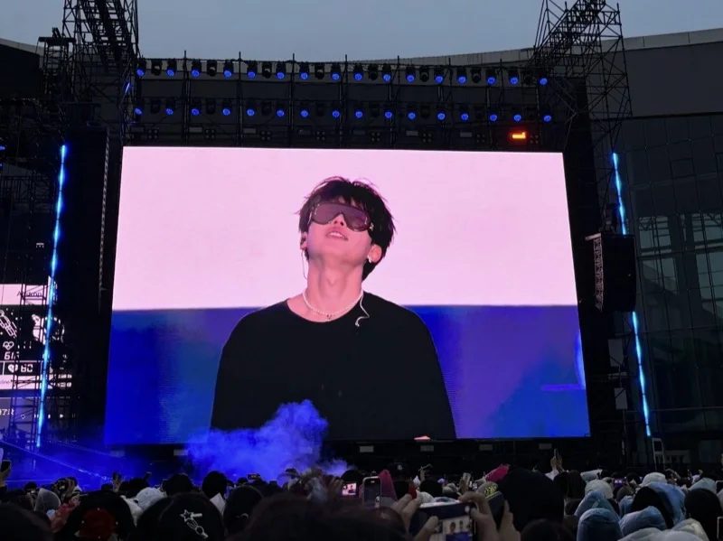
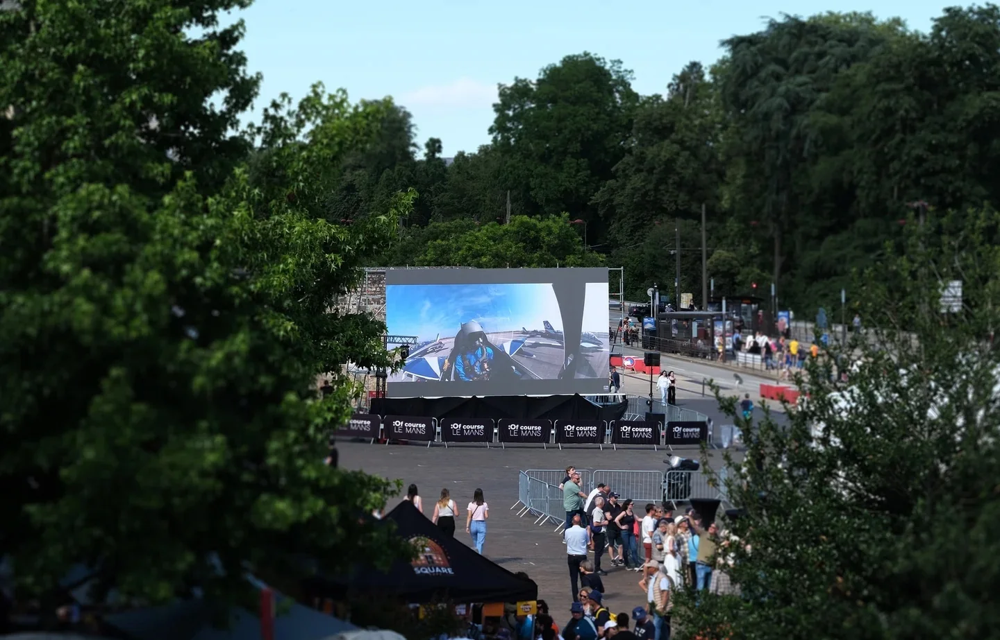
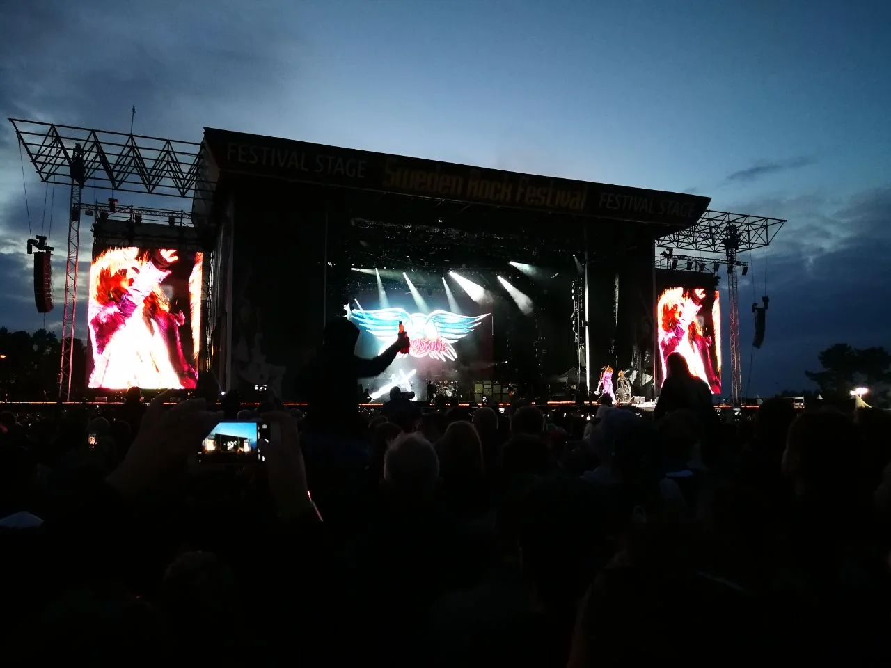

What is wind load, ballast and ground support for an outdoor rental LED wall? It is the temporary structure that keeps a freestanding or tower-mounted screen from sliding, overturning or folding when the wind rises during an outdoor event. The buying decision is not only which cabinet to hire. It is whether the wall, the towers or ground-support frames, the ballast or guys, and the site wind assumption have been designed as one system and signed off by a person who is allowed to do that work.
This guide is for rental companies, festival producers, sports-event operators and the engineers who support them. It covers temporary outdoor walls that stand on the ground or on ballast, not a permanent facade. For the load types that apply to a fixed installation, use our structural load guide. For flown walls and truss hardware, use the rigging installation guide. The outdoor rental guide covers weather, brightness and fleet practice around this topic rather than the support design itself.
An outdoor LED wall behaves as a sail. The force on it depends on the wind speed at the site, the area of the face (and any skin, banner or soffit attached to the same frame), the height of that force above the base, and how the base is held down. The cabinet is one part of that system. A published cabinet wind figure tells you something about the panel and its intended touring use. It does not, by itself, tell you how much ballast to put on the outriggers, whether the ground can take that load, or at what gust the show must go dark and the wall come down.
Asia Vision's product page for the COB ZH touring series is explicit about the split of responsibility: the cabinet and its rigging have to be assessed for the wind load the site expects, and the structural design is carried out by the stage engineer rather than by the screen supplier. What the manufacturer supplies is the panel's weight, dimensions and rigging interface so that calculation can be made. That is the right way to write the enquiry, and it is the way this guide treats every series, including those that do not publish a wind figure.
On the published product pages, only COB ZH states a wind figure: wind-load resistant up to 20 m/s, with a 500 × 1000 × 94 mm cabinet, 4000 cd/m², ≥10,000:1 contrast, P1.95 / P2.6, and curving blocks from −7.5° to +7.5°. The page positions that figure for outdoor concerts, festivals and touring events. It does not publish the test method, the safety factor, the allowed height, or whether 20 m/s is a mean speed or a gust. Ask for that detail on the quotation if you need to put the figure next to a site wind speed from the event engineer.
The outdoor version of the S Series publishes P2.97, P3.91 and P4.81 on the same 500 × 500 / 500 × 1000 mm cabinet platform as the indoor version. It does not publish a wind rating. For a rental fleet that standardises on that platform, the wind figure, the rigging interface and the allowed stack height have to be requested per configuration and confirmed on the quotation. D-PRO is an outdoor fixed series (P5 to P10, front-maintenance 480 × 320 mm module, brightness up to 10,000 cd/m²). It is specified for permanent roadside and facade positions, not as a touring ground-support system. If a project mixes a temporary wall with a fixed outdoor estate, treat the two structures separately.
Figure 1 shows a freestanding outdoor LED wall in an open public square. The face is a sail in the wind; the base, the ballast or the guys, and the exclusion zone around it are part of the same design.

The number that matters is the site design wind, not a figure copied from the last festival. Temporary outdoor screens are usually designed by a qualified engineer against the event's temporary-structure rules and the local wind code, not against a generic “outdoor LED” number. Ask the engineer to state, in writing:
Do not convert a cabinet rating of 20 m/s into a permission to stand a wall in a 20 m/s site wind. The engineer has to apply the code's pressure coefficients, a safety factor, and the actual height and width of the build. A curved wall (COB ZH publishes a curve range; the S Series page asks whether curved assembly is required) changes the area and the load path; those builds need their own calculation, not a reuse of a flat-wall sheet.
Most festival and civic screens of this type stand on ground-support towers or a ballasted frame rather than on a building. The usual restraint options are:
The screen supplier can provide cabinet weight, footprint, lifting points and a typical stacking layout. The ballast mass, the outrigger length, the soil or pavement capacity, and the public exclusion zone are site work. There is no single “kilograms per square metre of screen” figure that is safe to copy into an RFQ, because a taller wall and a narrower base change the moment arm. If a bidder offers a standard ballast package, ask what wind speed, height and ground type it was sized for, and have the event engineer accept or reject it.
Soft ground, buried services, underground parking slabs and timber stages all limit how much weight you can place, and where you can drill. A site survey belongs in the same pack as the wind note. Our COB touring guide covers the handling and spares side of moving that system from one site to the next.
A wall that hangs from a roof or a tower transfers wind load into that structure rather than into ballast on the ground. It is still a wind-load problem, but the questions change: the roof or tower capacity, the hoist redundancy, the permitted wind for lifting, and how the wall is stabilised if a hoist is lost. Do not treat a flown drawing and a ballasted drawing as interchangeable. If an outdoor show might do both in one tour, the RFQ should say so, because the cabinet's rigging interface, the flying bars and the ground-support frames may be different kits.
Operational rules belong in the same document as the structural design. Typical items are a wind monitor at the site, a named person who can stop the show, a method for lowering or parking the wall, and a spare plan if a section has to come out. Those rules are worthless if they are written to a wind figure that the cabinets or the ballast cannot actually meet.
Figure 2 shows an outdoor festival stage with a roof, towers and side LED screens. The wind load on the screens has to be taken with the roof and towers, not as an isolated cabinet problem.

A workable temporary-outdoor RFQ is specific about the system, not only about the pixel pitch:
Add the site plan, the maximum wall size, whether the wall is flown or ground-supported, the build and strike windows, and who is the duty holder for temporary structures in that jurisdiction. Product pages publish a 3-year warranty and 18-day standard delivery; a custom frame, a new engineering pack or a mid-tour design change can take longer, and that time should sit in the programme rather than in the shipping promise.
For an outdoor touring or festival wall, start with COB ZH if you need the published 20 m/s cabinet figure, 4000 cd/m² and the 500 × 1000 mm touring format, or with the S Series outdoor pitches if the fleet is standardised on the 500 mm platform. Send the wall size, the flown or ground-supported method, the site wind note if you have one, and the programme. We will confirm the cabinet data — weight, dimensions, rigging interface and any wind figure — on the quotation. Ballast masses, soil capacity and sign-off of the temporary structure are the event engineer's work; we will not invent those numbers. Start the enquiry through the contact form.
Scoping a festival or civic outdoor wall? Send the wall size, whether it is flown or ground-supported, and any site wind note you have, and we will reply with the cabinet data for the configuration. Start a project enquiry.